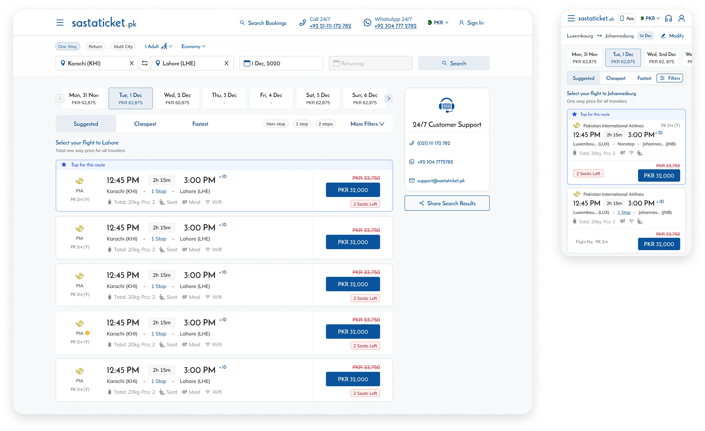
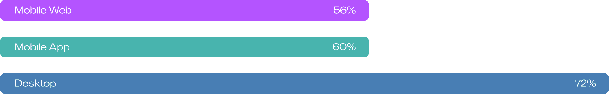
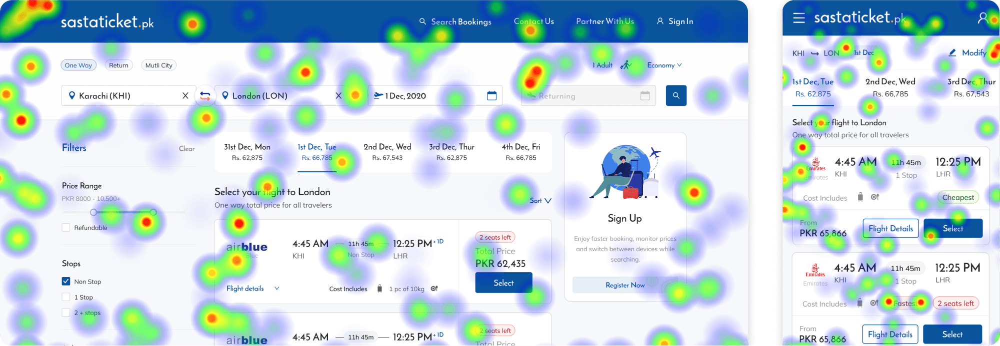
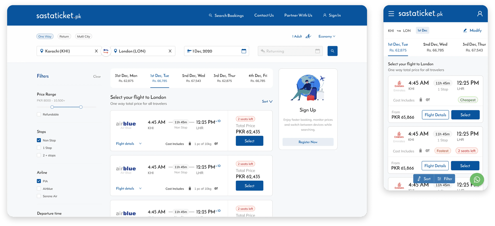
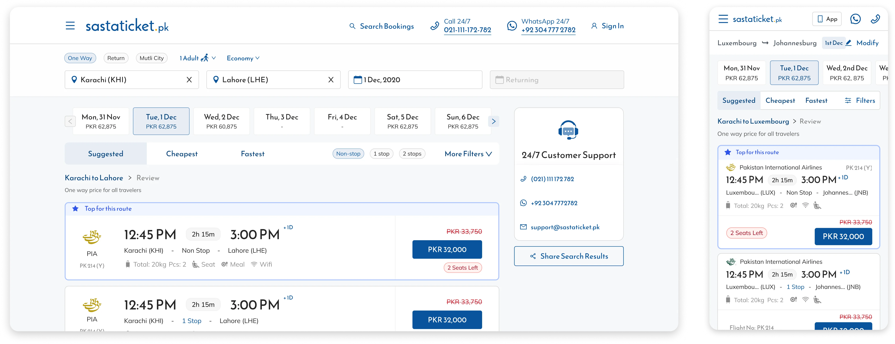
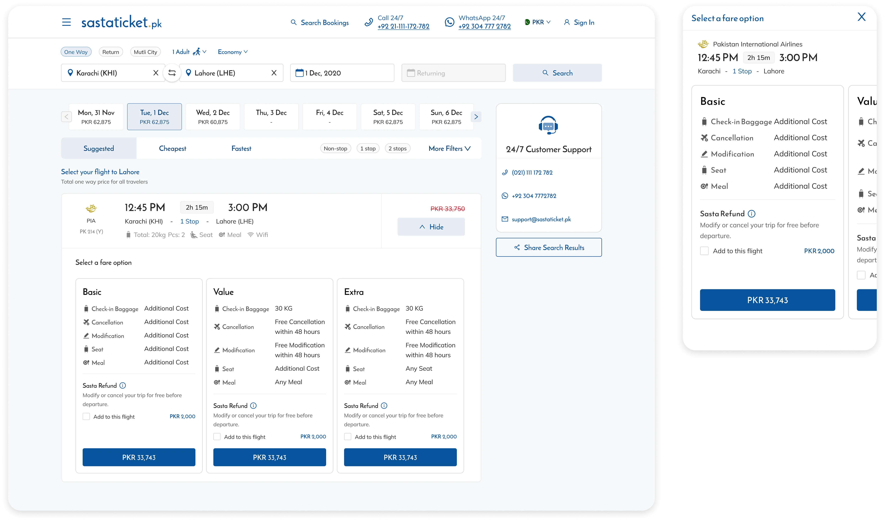
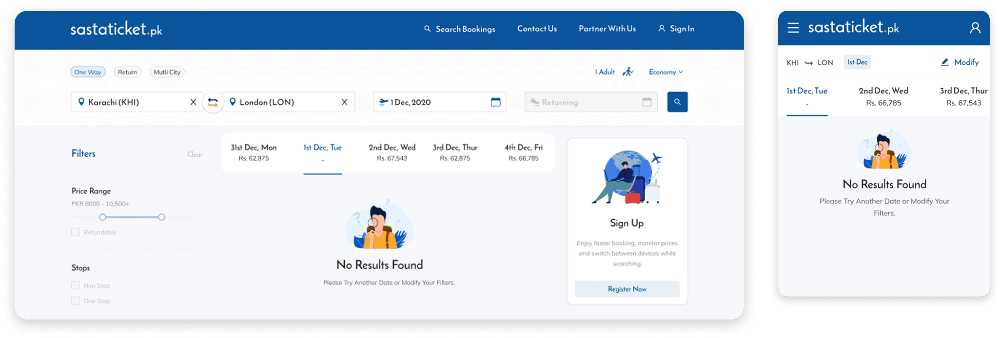
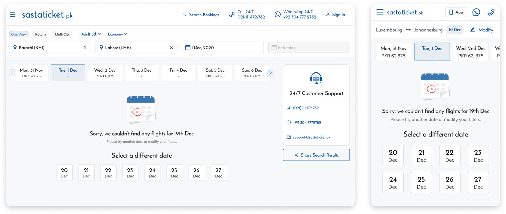

Sastaticket
Building financial confidence at scale
Built five interconnected fintech features to reduce payment anxiety at a 500k user travel marketplace.

 Sastaticket Case Study
Sastaticket Case Study

Sastaticket's search results page was seeing a 61 percent drop-off rate. This page is a core revenue-driving step in the booking funnel and serves over 500k monthly users. As the lead designer, I owned the redesign of this experience and aligned research insights with quarterly growth KPIs.
Through a structured UX audit, analytics-led prioritization, and iterative validation, we reduced drop-off from 61 percent to 42 percent. That 19 percent improvement increased completed bookings, conversion rate, and overall revenue capture.
Someone searches Karachi to Islamabad, gets their results, and then leaves. That was happening 61 percent of the time. Not because the flights weren't there. Because the page made it harder than it needed to be to find the right one, compare it confidently, and commit. At 500k monthly users, that friction wasn't a UX problem. It was a revenue problem.
The page had to serve two completely different users at the same time. Someone ready to book immediately and someone still comparing prices and dates. The existing experience served neither well.
Flight cards were visually dense and hard to scan. The header competed with the primary CTA for attention. Filters added noise on routes where they weren't useful. The fare calendar made date comparison unnecessarily difficult. Users hesitated when expanding fare options and hit dead ends when no flights were available.

Figures rounded off.
Some problems required backend engineering that wasn't available immediately. Load time improvements couldn't ship as soon as we wanted. Rather than wait or try to solve everything at once, I focused on what design could control independently and what would have the most direct impact on drop-off.
That meant flight card hierarchy, competing visual elements in the header, fare calendar usability, and no-flight dead ends. All four were design-solvable, high impact, and shippable.
Research showed price was the primary motivator but it was buried in a cluttered card. We made cards full width, reduced visual noise, and replaced the Select CTA with a price-forward button that had been tested the previous quarter and consistently outperformed it. A Top for This Route label was added for the top curated flight so users had a confident starting point rather than scanning everything at equal weight.
The header used the same primary color as the booking CTA. Two elements fighting for the same attention at the most critical moment in the funnel. We neutralized the header, moved WhatsApp to a secondary position, and removed the Flight Details CTA from the card entirely. Analytics showed it was barely used at this stage and only became relevant after fare selection, so it was moved to the Review Trip page where it actually belonged.
Filters were adding visual noise to the page without adding value for most users. On the highest booking routes there wasn't enough schedule flexibility to make filtering useful, yet the filters were taking up prominent space and competing for attention for users who didn't need them. We made them collapsible so they were there when needed and invisible when not.


Many users were planning, not booking. The calendar made date comparison unnecessarily hard. We enabled two months at once, switched mobile scrolling to vertical, and added pricing under each date so explorers could compare without leaving the page.


Users hesitated after opening fare options because they were hard to read quickly and to compare to each other. We simplified the structure, and clarified what each fare included to reduce hesitation at the highest drop-off point in the flow.


A dead end with no flights and no clear next step was losing users entirely. We added CTAs to change dates and reduced dead-end screens. Curated alternative flights were proposed but deferred due to engineering complexity. We shipped what we could and documented what we couldn't.


Changes were validated through structured usability testing and iterative refinement before going live. Once shipped we ran A/B testing and monitored performance for multiple months to account for seasonal variation in travel demand. The improvement held across seasons, confirming the drop-off reduction was structural rather than temporary.
User testing on Figma
Drop-off reduced from 61 percent to 42 percent. That 19 percent improvement contributed to increased completed bookings, higher search-to-book conversion, and stronger revenue capture.
Even after seasonal shifts in travel demand, drop-off did not return above 50 percent. The improvement held because it was structural. We fixed how the page worked, not just how it looked.
This initiative:
I operated as the design authority for this initiative while partnering closely with product leadership.
Not all issues were shippable.
Backend performance improvements required engineering effort that was not immediately available.
We prioritized:
This allowed measurable progress without blocking roadmap velocity.
Travel planning is exploratory, not linear.
Small hierarchy improvements can significantly influence user behavior.
Prioritization under constraint drives more impact than large-scale redesigns.
Incremental improvements compound into meaningful business results.
Next Case Study
Built five interconnected fintech features to reduce payment anxiety at a 500k user travel marketplace.